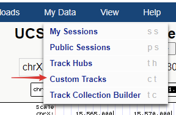

生信分析过程中，会与很多不同格式的文件打交道，除了原始测序数据fastq之外，还需要准备基因组文件fasta格式和基因注释文件gtf格式。在分析的过程中还会有众多中间文件的生成，如bed、bed12、sam、bam、wig、bigwig、bedgraph等，生成后我们一般会查看下内容了解文件每一列的含义，以此来决定需要提取哪些有用信息列来进行下一步分析。
一、测序数据FASTQ文件
1）文件用途：样品测序返回的数据一般存储为fastq文件，通常是压缩文件filename.fq.gz的格式，节省存储空间和传输时间。NGS基础 - FASTQ格式解释和质量评估
2）查看方式
1 | # zcat查看gzip压缩的文件 |
3）格式说明：fastq文件每4行代表一条序列
第一行：记录序列测序时所用仪器以及在测序通道中坐标信息，以@开头；
第二行：测序的序列信息，以ATCGN表示，由于荧光信号干扰无法判断是什么碱基时就用N表示；
第三行：通常一个+;
第四行：与第二行碱基信息一一对应，存储测序碱基的质量值。
4）其他常用命令
1 | # 计算read数 |
awk的介绍见：常用和不太常用的awk命令
二、基因组FASTA文件
此文件可以从ensemble数据库下载的（https://www.ensembl.org/info/data/ftp/index.html）， 一般选择下载primary assemblyfasta（想知道为什么，点这里）。fasta文件用于序列存储，可以是DNA或蛋白序列，在此FASTA文件存储了基因组序列的信息。
序列名字行：以>符号开头，记录了该序列类型和所在基因组位置信息；
序列行（一行或多行）：序列信息，soft-masked基因组会把所有重复区和低复杂区的序列用小写字母标出的基因组，小写字母n表示未知碱基。
1 | >1 dna_sm:chromosomechromosome:GRCh38:1:1:248956422:1 REF |
三、基因组注释文件gff和gtf
gff全称General featureformat，主要是用来注释基因组。gtf全称Gene transfer format，主要是用来对基因进行注释。两者均是一个9列的基因信息注释文件，前8列的信息几乎一样，区别在于第9列。具体可见历史推文NGS基础 - NGS基础 - GTF/GFF文件格式解读和转换
GFF文件是以tab键分割的9列组成，以下为每一列的对应信息：
- seq_id：序列的编号，一般为chr或者scanfold编号；
- source: 注释的来源，一般为数据库或者注释的机构，如果未知，则用点“.”代替
- type: 注释信息的类型，比如Gene、cDNA、mRNA、CDS等;
- start: 该基因或转录本在参考序列上的起始位置；(从1开始，包含);
- end: 该基因或转录本在参考序列上的终止位置；(从1开始，包含);
- score: 得分，数字，是注释信息可能性的说明，可以是序列相似性比对时的E-values值或者基因预测是的P-values值，
.表示为空; - strand: 该基因或转录本位于参考序列的正链(+)或负链(-)上;
- phase: 仅对注释类型为“CDS”有效，表示起始编码的位置，有效值为0、12. (对于编码蛋白质的CDS来说，本列指定下一个密码子开始的位置。每3个核苷酸翻译一个氨基酸，从0开始，CDS的起始位置，除以3，余数就是这个值，，表示到达下一个密码子需要跳过的碱基个数。该编码区第一个密码子的位置，取值0,1,2。0表示该编码框的第一个密码子第一个碱基位于其5’末端；1表示该编码框的第一个密码子的第一个碱基位于该编码区外；2表示该编码框的第一个密码子的第一、二个碱基位于该编码区外；如果Feature为CDS时，必须指明具体值。)；
- attributes: 一个包含众多属性的列表，格式为“标签＝值”(tag=value)，以多个键值对组成的注释信息描述，键与值之间用“=”，不同的键值用“；”隔开，一个键可以有多个值，不同值用“,”分割。注意如果描述中包括tab键以及“，= ；”，要用URL转义规则进行转义，如tab键用 代替。键是区分大小写的，以大写字母开头的键是预先定义好的，在后面可能被其他注释信息所调用。
从ensemble下载的gtf文件前5行一般是以#开头的注释信息，后续分析中用不上需要去除，同时需要给第一列添加chr标签（与基因组序列一致），可通过下面的命令对文件进行加工：
1 | # grep 匹配查询 -v 输出不匹配的行 |
四、bed文件
1、介绍
分析过程中的bed文件一般代表区域信息，如表示Peak位置的bed文件，表示基因注释的bed12文件。
表示基因注释时，gtf/gff和bed文件的区别：
1）gtf/gff文件一行表示一个exon/CDS等子区域，多行联合表示一个gene；bed文件一行表示一个gene；
2）gtf文件中碱基位置定位方式是1-based，而bed中碱基定位方式是0-based，如下图所示:
可以参考我的另外一篇博客：0-based & 1-based的解释和转换实例
bed文件每一行对应信息
必须包含的3列信息：
1）chrom：染色体名字 (e.g.chr3, chrY, chr2_random或者scaffold10671)。
2）chromStart：基因在染色体或scaffold上的起始位置（0-based）。
3）chromEnd：基因在染色体或scaffold上的终止位置 （前闭后开）。
可选的9列信息：
4）name：bed文件的行名。
5）score：本条基因在注释数据集文件中的评分（0-1000），在Genome Browser中会根据不同区段的评分显示对应的阴影强度（评分越高灰度越高）。
6）strand：链的方向+、-或. (.表示不确定链的方向)
7）thickStart：CDS区（编码区）的起始位置，即起始密码子的位置。
8）thickEnd：The ending position at which the feature is drawn thickly (for example the stop codon in gene displays).
9）itemRgb：RGB颜色值（如：255,0,0），方便在GenomeBrowser中查看。
10）blockCount：bed行中外显子的数目。
11）blockSizes：逗号分割的列，数目与blockCount值对应，每个数表示对应外显子的碱基数。
12）blockStarts：逗号分割的列，数目与blockCount值对应，每个数表示对应外显子的起始位置（数值是相对ChromStart计算的）。
2、narrow, broad, gapped peak:三种格式之间的区别与联系
在进行peak calling分析时，经常会接触到以下3种peak格式：narrow peaks format，broad peaks fotmat，gapped peaks format
peak被定义为基因组上一段reads富集的区域，核心信息是在染色体上的起始和终止位置，除此之外，还有软件对于该peak区域的打分，比如常见的pvalue, qvalue, fold_enrichment等值。
和基因组比对信息用BAM格式来存储类似，为了标准化不同peak calling软件的输出，特意制定了以上3种数据格式。这三种格式本质上都是bed文件，只不过列数不太类似。
1. Narrow Peaks Format；
该格式又称之为point-source peaks format, macs2默认输出就是这种格式，是一种BED6+4的格式，列数为10列，如下：
前四列分别代表chrom, chromStart, chromEnd, name, 用于描述peak区间和名称，注意bed格式中起始位置从0开始计数。
第五列代表score,在macs2的输出结果中为int(-10*log10qvalue)；
第六列代表strand, 在macs2的输出结果中为；
第七列代表signalvalue, 通常使用fold_enrichment的值；
第八列代表pvalue, 在macs2的输出结果中为-log10(pvalue)；
第九列代表qvalue, 在macs2的输出结果中为-log10(qvalue)；
第十列代表peak, 在macs2的输出结果中为peak的中心，即summit距离peak起始位置的距离。
2. Broad Peaks Format
这种格式就是在narrow peaks format的基础上丢掉了最后一列的信息，为BED6+3的格式， 列数为9列。
3. Gapped Peaks Format
前两种格式都是由于描述连续的peak区间，适用于DNA水平上的富集区域信息的存储，比如chip_seq, ATAC_seq鉴定到的peak区间，而gapped peaks format用于描述非连续的peak区间，这里的非连续通常指的是在peak的区间内会包含多个exon区域，适用于RNA水平上的富集区域信息的存储，比如m6A_seq鉴定到的peak区间。
该格式在BED12的基础上进行延伸，演变为BED12+3的格式，列数为15列，每列的含义示意如下
前6列的含义和上述两种peak格式完全相同，后3列的含义和broad peak完全相同，为了专区表示peak区间内包含的exon信息，借鉴转录本的BED12格式，引入了以下6列：
thickStart，thickEnd，itemRgb，blockCount，blockSizes，blockStarts
thickStart和thickEnd有点类似转录本中CDS的起始和终止位置，在存储peak信息时，通常的做法是将这两列的值和chromStart和chromEnd的值设置成相同的，itemRgb是一个RGB颜色值，比如255,0,0, 如果没有对应的颜色信息，则用0来表示。
blockCount代表该peak区间包含的exon的个数，blockSizes代表每个exon区间的长度，多个exon用逗号连接，blockStarts代表每个exon区间在基因组上的起始位置，多个exon用逗号连接。
关于这三种格式的相关介绍请参考以下链接
https://genome.ucsc.edu/FAQ/FAQformat.html#format13
3、bed数据处理
详细可以参考官方网页：The BEDTools Suite
中文参考文档：最全Bedtools使用说明–只看本文就够了
五、sam和bam文件
1、介绍
sam文件全称The SequencingAlignment/Map Format，是Alignment/Map步骤bwa/STAR/HISAT2等软件对结果的标准输出文件，用于存储reads比对到参考基因组的比对结果，是一个纯文本格式，文件一般较大。为了节省硬盘存储，一般使用其高效压缩的二进制格式bam文件。
利用samtools view的-b参数就能把sam文件转为bam文件。
1）sam文件查看方式
在linux终端直接用less即可进行查看；
2）bam文件查看方式
需要借助samtools view工具进行查看
1 | samtools view filename.bam | less -S |
NGS分析中大多数文件都是由header和record两部分组成，加上-h参数后可以将header显示出来，默认是不显示的。
1 | @HD VN:1.5 SO:coordinate |
header内容
1 | @HD：是必须的标准文件头，包含版本信息； |
record内容
1 | 每一行就是一条read比对上参考基因组的信息，总共12列，用tab键分割。 |
2、flag信息
sam文件中第二列flag信息很重要，下面做进一步解释。
利用samtools flagstat工具可以查看bam文件中比对的flag信息，并输出比对的统计结果。
samtools flagstat *.bam
flag一共有12个标签，使用16进制数表示，每个标签值是2^(n-1)，其中n<=12，每个值有其对应的唯一解释含义，具体见下图。

1 | 1 ： 代表这个序列采用的是PE双端测序 |
你会发现随机挑选几个值做加和运算，他们的结果都是唯一的，所以在bam文件中第二列flag的值代表这条序列符合下图所示条件的值的和。
所以根据这个值我们可以判断这条序列是双端测序还是单端测序；如果是双端测序，reads来自左端还是右端。比如65只能是1和64组成，代表这个序列是双端测序，而且是read1。
每次转换很头疼？别担心，网上有很多解码flag含义的在线工具，如SAM Format（网址：https://www.samformat.info/sam-format-flag）
也可以使用我博客中的软件：SAM FLAG
输入flag的值，解析工具会返回匹配上的信息。如果是单端测序，flag值都是偶数。
如果是双端测序，工具会帮我们把另外一端序列的flag值返回，并且将这些数字情况大致分为5类，在右侧进一步显示这个值对应的含义。
3、sam/bam文件处理
详细可以参考官方网页：Samtools
中文参考文档：****samtools常用命令详解****
wig、bigwig和bedgraph文件
上述bam和sam文件可以帮助我们探索reads在参考基因组中的比对情况，导入基因组浏览器查看比对状态和突变信息。而wiggle(简称wig)、bigwig(简写bw)以及bedgraph(简写bdg)只包含区域和区域的覆盖度信息，文件更小，用于可视化更方便，可以导入基因组浏览器（Genome Browser）中进行可视化，以查看reads在参考基因组各个区域的覆盖度并检测测序深度。这几个文件在ChIP-seq数据分析Call Peak阶段会生成，可以利用IGV等工具进行可视化，方便查看组蛋白修饰的程度。
六、wig/bigwig介绍
wig 文件全称叫 Wiggle Track Format， 用来绘制基因组上的图形轨迹的文件格式。wig 格式是较老的格式，用来显示密集且连续的数据，比如GC含量，概率分数，转录组数据等，而bigwig是wig格式的压缩形式。
wig 数据有两种类型：variableStep 和 fixedStep。
我们先来研究这两种类型的文件，后面在基因组浏览器中利用这些文件显示轨迹。
1、variableStep 格式
（1）特点及适用场景：
- 在指定的染色体片段区域绘制条形图
- 用于全基因组数据集（大约百万分之十的数据点）
- 指定的区域必须为恒定大小（由span参数指定）
- 数据点间具有不规则间隔的数据，但是在某些情况下建议谨慎
- 如果数据点的不规则间距太极端，此格式在编码和显示期间可能效率很低。在这种情况下，“bedGraph”是最佳格式。
- 一般UCSC不建议采用该格式作为基因组浏览器输入文件，因为考虑到数据集大小与索引构建，都不如 bigwig 更高效
- 使用 wigToBigWig 将 Wig 转换为 bigWig 文件
（2）格式：
声明行：以单词variableStep开头，后跟染色体规范。
数据行：两列，分别包含染色体位置和数据值。
1 | variableStep chrom=chrN |
（3）例子：
下面表示在2号染色体上的300701-300705位置均显示12.5
1 | variableStep chrom=chr2 |
可选的span参数（默认值：span = 1）允许更简洁地指定由连续的具有相同数据值的碱基组成的数据。
跨度从指定的每个染色体位置开始，并指示数据值应覆盖的碱基数。例如： 应用span=5后，相当于：
1 | variableStep chrom=chr2 span=5 |
wiggle 格式用于快速显示非常密集的数据。当每1,024个碱基只有几个数据点时，variableStep格式会变得效率极低。
如果variableStep数据点相距大于约100个碱基，则建议使用 BedGraph格式。
2、fixedStep 格式
（1）特点及适用场景：
- 在指定的染色体片段区域绘制条形
- 最适合用于全基因组数据集（大约百万分之十的数据点）
- 指定的区域必须为恒定大小（由span参数指定）
- 染色体位置精确地有规律的间隔（由step参数指定）
（2）格式：
声明行：单词fixedStep开头，并包含染色体，起始坐标和步长的规范 。
数据行：一列，包含数据值。
1 | fixedStep chrom=chrN |
（3）例子：
表示3号染色体上的三个区域（每个区域5个碱基）：400601-400605、400701-400705和400801-400805，分别显示值11、22和33
1 | fixedStep chrom=chr3 start=400601 step=100 span=5 |
对于variableStep和fixedStep格式，必须在整个数据集中使用相同的。如果未指定跨度，则使用默认跨度1。
顾名思义，fixedStep 在整个数据集中需要相同的大小步长。如果未指定，则步长为1。
3、数据值
wiggle 格式的数据值可以包含整数，实数，正值或负值，但不支持 NaN 值。未指定的位置没有数据，也就不会显示。
需要注意：wiggle文件（variableStep and fixedStep ）的染色体坐标是从1开始。
例如，对于长度为N的染色体，第一个位置为1，最后一个位置为N。
对于 bigwig 文件，使用 wiggle 转换为 bigwig，使用的染色体坐标是从1开始。
而使用bedGraph格式创建的BigWig文件使用0开始。
自定义 wiggle 轨迹的参数:
1 | track type=wiggle_0 name=track_label |
其他参数:
1 | autoScale <on|off> # default is on |
4、例子
（1）下面是 Wig 格式的文件，分别包含 variableStep 和 fixedStep 格式创建的两段轨迹
1 | browser position chr19:49304200-49310700 |
（2） 选择菜单栏My Data的Custom Tracks

（3）将上面的代码粘贴到输入框，点 Submit
（4）简要信息显示，点Go进行绘制
（5）拿到绘制好的轨迹图
七、BedGraph（基因组浏览器绘制）
1、特点及适用场景：
- 存放区间的坐标轴信息和相关评分(score)的文件，主要用于存储稀疏，不连续的数据
- 后缀名.bedGraph
- 一般UCSC不建议采用该格式作为基因组浏览器输入文件，因为考虑到数据集大小与索引构建，都不如 bigwig 更高效，尤其在如果bedGraph数据集非常大（超过5000万行 ），推荐转为 bigwig 文件
- 使用WigTobigWig将 bedGraph 转换为bigWig 文件
- 需要注意 bedGraph 文件不能转换为 wig 文件
2、格式
一共包含四列：chromA chromStartA chromEndA dataValue，有点类似bed文件
分别为：
chromA 染色体号
chromStartA 起始位点：染色体坐标从 0 开始，这意味着第一个染色体位置为0，而长度为N的染色体的最后位置将为N-1。
chromEndA 终止位点
dataValue 数据值：数据值可以是整数或实数，正值或负值。输入数据中列出的位置必须按数字顺序，并且仅会绘制指定位置的图。
参数:
1 | track type=bedGraph name=track_label description=center_label |
3、例子
下面的文件可以描述为：
在第19号染色体的49,302,001到49,304,701区域的三个轨迹中指定9个独立的数据点。
1 | browser position chr19:49302001-49304701 |
粘贴上面的代码，点 Submit
https://genome.ucsc.edu/cgi-bin/hgCustom
绘制轨迹
上面的示例是一个定制轨迹，其中包括track type = 一行特定于在浏览器中加载数据的行。
此行将导致原始bedGraph数据文件无法通过validateFiles浏览器外部的其他工具进行验证。
推荐大家阅读UCSC官网对这几个文件的详细解释：
wiggle(WIG)：https://genome.ucsc.edu/goldenPath/help/wiggle.html
bedGraph：https://genome.ucsc.edu/goldenPath/help/bedgraph.html
bigWig：http://genome.ucsc.edu/goldenPath/help/bigWig.html
参考：
https://blog.csdn.net/qazplm12_3/article/details/108162714
https://genome.ucsc.edu/FAQ/FAQformat.html#format13
wiggle(WIG)：https://genome.ucsc.edu/goldenPath/help/wiggle.html
bedGraph：https://genome.ucsc.edu/goldenPath/help/bedgraph.html
bigWig：http://genome.ucsc.edu/goldenPath/help/bigWig.html